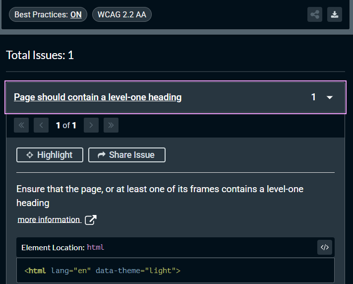
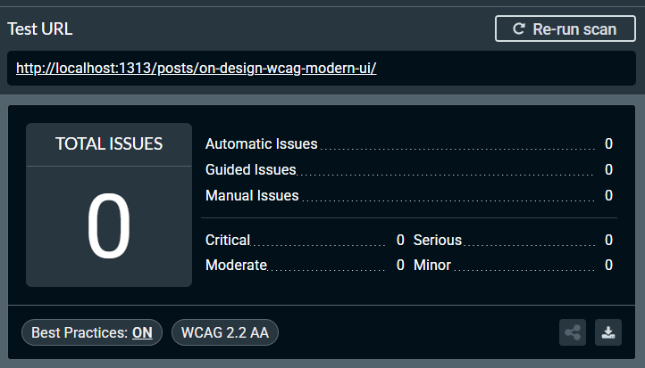

WCAG 2.2, Design, and Modern UI
Accessibility as Design
Web Accessibility is often overlooked in modern web development. With the advent of LLMs for web design or “vibecoding”, the results are often large elements and typography, and carousels that are distracting. From my point of view, so much web design and writing is becoming homogenized and dishonest. Poor accessibility is now a facet of so many websites that were drafted quickly from generative ai. There are now countless examples of websites failing to meet basic accessibility standards. These are 8 and 9 figure businesses with entire teams for user experience. Observing this made me realize that I should audit my own work as best as I can. I am by no means an expert or arbiter of web accessibility. In fact, this post serves as my own reminder to meet every guideline of WCAG 2.2 and refresh my own design. In my own design, I want to create a peaceful and inviting reading experience. User defined customization is another relevant area of discussion in UI design right now. For WCAG, user defined customization is great, but should not be required of the user.
Accesibility should be the design itself and that is what I have focused my efforts on. It is also a misconception that just meeting WCAG is enough. Design is always evolving and so is web-accesibility.
Meeting WCAG is not enough
Simply running a given site through an online checker is not enough. Instead, a more proactive approach of consistent, compliant design and readable, maintainable code is necessary. It can be challenging when something looks accessibile, but is failing at the “Operable” level. Every element on this particular website should be operable now. The blog can now be interacted with by a wider variety of user agents and assistive technologies (i.e screen-readers).
Below, I have created a checklist of how I am personally implementing WCAG 2.2 through all of my design of this blog.
*Note: For these changes, I am using WCAG’s structure Perceivable, Operable, Understandable, Robust. (POUR) This is not in any way an effort to meet full AAA compliance. This checklist reflects changes made to this site to meet WCAG 2.2 Level AA
- Escape key closes all navigation.
// -------------------------------------------
// Escape closes all navigation panels
// -------------------------------------------
document.addEventListener("keydown", (e) => {
if (e.key === "Escape") closeAll();
});
- Semantic button elements for keyboard & screen-reader users
<!---------------------------------
Semantic elements in mobile menu-->
<!--------------------------------->
<button class="nav__icon" data-panel="panel-menu" type="button" aria-label="Open menu">☰</button>
- No surprise navigation. The inert attribute guarantees that no keyboard focus or a screen-reader can accidentally hit the closed menu.
<section class="panels" aria-label="Panels">
<div class="panel" id="panel-menu" aria-hidden="true" inert>
<div class="panel__head">
<div>menu</div>
<button class="panel__close" data-close type="button" aria-label="Close panel">×</button>
</div>
- Verified text contrast meets WCAG 2.2 AA (4.5:1 for body text, 3:1 for large text)
/* Light — #111111 on #ffffff = 18.1:1 */
:root{
--bg:#ffffff;
--fg:#111111;
--muted:#6f6f6f; /* 5.74:1 — meets AA for large text */
}
/* Dark — #f2f2f2 on #0d0d0d = 18.6:1 */
:root[data-theme="dark"]{
--bg:#0d0d0d;
--fg:#f2f2f2;
--muted:#b8b8b8; /* 7.35:1 — meets AA */
}
- Focus Visible
/* ───────────────────────────────────────────────────────────
Focus Visible
─────────────────────────────────────────────────────────── */
:focus-visible{
outline:2px solid var(--fg);
outline-offset:3px;
}
- Skip to main content
This satisfies WCAG 2.2 – 2.4.1 (Bypass Blocks).
<a class="skiplink" href="#main">Skip to main content</a>
<main id="main" class="main" tabindex="-1">
<!-- page content -->
</main>
Editorial and Compliant
Some changes may actually be in compliance to WCAG while still maintaining an editorial feel. For example, I recently changed the selection or highlight of selected text. I appreciate attention to details like this that make the design feel distinct. I was surprised when I learned that this change was still in compliance, as they are at a ratio of ~11:1. While there is no specific rule for ::selection pseudo element, contrast minimums still applies to text readability. Another recent choice in this direction is to left align all contents on desktop view.
/* Text selection highlight
Maintains ~11:1 contrast ratio for readability */
::selection{
background:#b8b8b2;
color:#000000;
}
::-moz-selection{
background:#b8b8b2;
color:#000000;
}
Compliance Testing
Automated testing can be good at catching the low-hanging fruit, but actually making changes like manual keyboard navigation is what makes our site accessible. For automated testing, I have opted to use Axe Dev Tools chrome extension. The extension will run a full page scan to test for wcag 2.2+ compliance. There are plenty of alternatives, and some may be able to spot issues better than others. In my experience, the online checkers are mostly a sales funnel for paid solutions. It is disheartening when resources for something so important are held behind paywalls. The best way to test a website for accessibility is manually with real users who have those needs. For these reasons, I will likely make improving web accessibility a series of blog posts.
The image below is after running a scan on the homepage, which came back with one error for ensuring a level-one heading.

After fixing the issue above, I ran another scan on the posts themselves and received zero errors.

I want to re-iterate that running automated tests or meeting WCAG is not enough. Manual testing with real users will always be the best method for compliance testing.
Conclusion
Accessibility is not a checklist to finish. WCAG compliance is a baseline, not a finish line. As always, everything here is open source. I have made every effort to lighten the blog and make it easier to navigate through in the repo. As browsers, assistive tech, and user expectations evolve, so will this site.